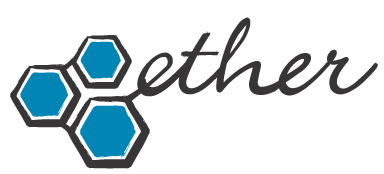

National
Geographic
Selected experienceLet’s talk

Neither do we.
We bring strategy, product, design and technology together to help organizations figure out what’s next—and make it happen.
Clear thinking. Thoughtful experiences. Useful things that work in the real world.
Selected organizations from our experience.
Explore the stories behind the work with us.
Products created by Ether to make everyday experiences simpler, smarter and more useful.
Featured / Catalyst by Ether
Your website, search, social and email.
Working together, so you can do what you do best.
A different way to tune in.
Connection, beyond the screen.
Curious about what we’re building?
Let’s talk
Ideas, experiments and observations about technology, design and what’s coming next.
Why rapid prototyping isn’t about building faster. It’s about learning sooner.
05 / Ether Gov
Modern product thinking, digital strategy and technology expertise for federal, state and local government.
Putting people at the center of the systems that serve them.
Let’s discuss your mission06 / About Ether
Good work starts with good questions.
We’re a product and innovation studio bringing senior thinking, diverse expertise and relentless curiosity to consequential problems.
We work across disciplines, connect the dots and stay close to the people we’re building for.
The next useful thing starts here